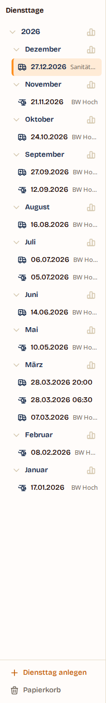
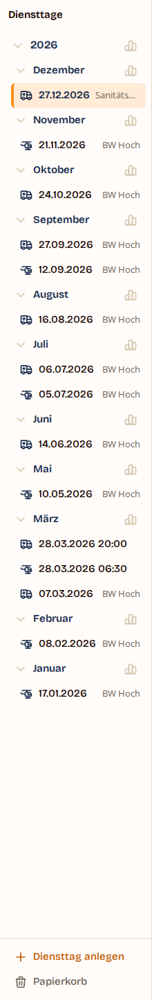
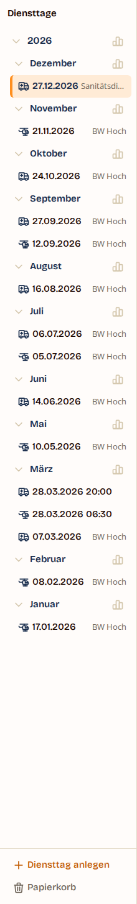
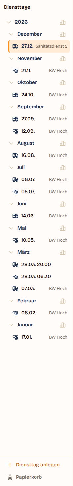
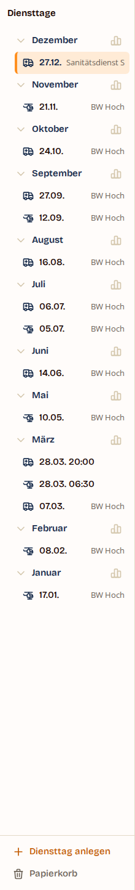

Zwischen 1024 und 1199 px ist die Diensttage-Leiste 220 px breit. Seit Web 16.1.0 steht
dort ein gesetzter Kurzname — aber meist nur als „BW Ho…", weil der Datumstext daneben nicht
schrumpft und je nach Ziffern 74 bis 83 px braucht (Bricolage Grotesque setzt Ziffern
proportional; die Regel tabular-nums nennt .eintrag-text nicht).
Drei Wege, das zu ändern — und der Ist-Stand daneben.
Diese Rahmen sind keine Nachbauten. Sie sind Aufnahmen der laufenden Anwendung mit eingespeister Regel; nur für Weg 3, den CSS nicht kann, ist der Datumstext im Browser umgeschrieben. Der Grund steht in der Prüfgeschichte dieses Pakets: Die erste Abnahmezahl („57 px frei, es passt") war an nachgebautem Markup und an einem einzigen, zufällig schmalen Datum genommen und hat neun von zwölf Ellipsen übersehen (F-S9-U-13).
Ist · Web 16.1.0

Akkordeon 8 px, Abstände 8 px, Datum mit Jahr. Neun von zwölf „BW Hoch" enden als „BW Ho…".
Weg 1 · Akkordeon 4 px

Die Einrückung wirkt zweimal (Jahr und Monat): 8 px mehr. Alle „BW Hoch" stehen ganz.
Weg 2 · dazu Abstände 4 px

Weitere 8 px aus den beiden Abständen der Zeile — und kein einziger Kurzname mehr als in Weg 1.
Weg 3 · Datum ohne Jahr

Das Jahr steht als Überschrift darüber. Rund 30 px frei; auch der 16-Zeichen-Name passt.
| Fassung | Datum | frei für den Nebentext | „BW Hoch" (55 px) | „Sanitätsdienst S" (95 px) |
|---|---|---|---|---|
| Ist (Web 16.1.0) | 74–83 px | 48–57 px | 3 von 12 ganz, 9 mit Ellipse | Ellipse |
| Weg 1 — Akkordeon 4 px | 74–84 px | 55–65 px | 12 von 12 ganz | Ellipse |
| Weg 2 — dazu Abstände 4 px | 74–92 px | 55–73 px | 12 von 12 ganz | Ellipse |
| Weg 3 — Datum ohne Jahr | 36–76 px | 55–95 px | 12 von 12 ganz | ganz |
Gemessen an der laufenden Anwendung (Demo-Konto, dreizehn Diensttage mit Kurznamen) bei 1024 und bei 1199 px — beide Breiten liefern dieselben Zahlen, die Leiste ist im ganzen Band 220 px breit. Zwölf Tage tragen „BW Hoch", einer den längstmöglichen Kurznamen mit 16 Zeichen; zwei weitere teilen sich ein Datum und zeigen seit Web 16.1.0 gar keinen Nebentext.
Das Jahr steht in der Überschrift — solange man sie sieht. Wer aus der Suche oder einem Zeitraum auf einen Diensttag springt, landet weiter unten in der Liste, und beim Rollen wandert die Jahreszeile aus dem Bild. Dann steht dort ein Datum ohne Jahr in einer Anwendung, die Diensttage über Jahre führt.
Weg 3 · Jahreszeile weggerollt

Derselbe Zustand nach einem Sprung aus der Suche: „27.12." ohne Jahr, die Monate darunter ebenso. Die Kurznamen stehen dafür alle ganz — auch der mit 16 Zeichen.
.eintrag-text trägt flex:1 0 auto
— das Datum schrumpft nicht, der Nebentext bekommt nur den Rest. Im Band bleiben für beide
zusammen rund 131 px. Das Datum schwankt um 9 px, weil die Ziffern proportional gesetzt sind:
„21.11.2026" misst 74 px, „08.02.2026" misst 83. Genau in dieser Spanne liegt die
Entscheidung, denn „BW Hoch" braucht 55 px.--abstand-1), kein neuer
Wert.RM_KURZ_MAX = 16 überhaupt zulässt. Die beiden anderen Wege dimensionieren gegen
ein sieben Zeichen langes Beispiel; dieser gegen die Regel.